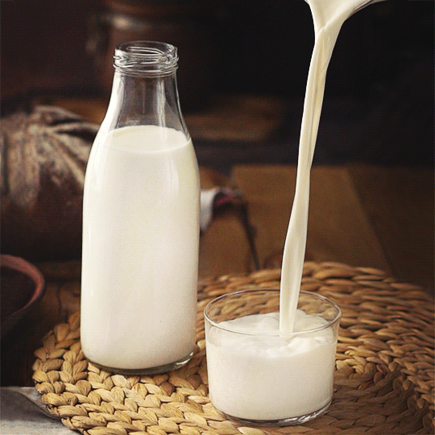
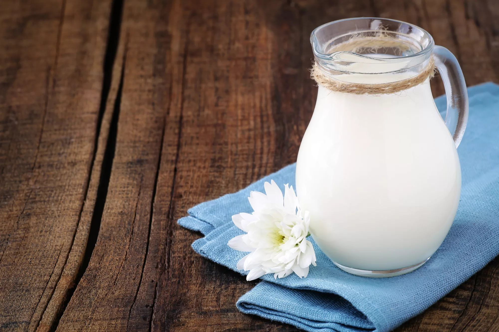

 МОЛОКО СУХОЕ ЦЕЛЬНОЕ Это молоко с естественной жирностью, которое не подвергалось манипуляциям по уменьшению или увеличению его жирности… ПОСМОТРЕТЬ ПОЛНОЕ ОПИСАНИЕ МОЛОКО СУХОЕ ОБЕЗЖИРЕННОЕ Обезжиренное сухое молоко - это порошок белого или кремового цвета, получаемый путем высушивания обезжиренного коровьего молока... ПОСМОТРЕТЬ ПОЛНОЕ ОПИСАНИЕ А ТАКЖЕ В продаже имеется сыворотка, яичный порошк, сырные продукты и т.д.(см. полный прайс-лист компании).